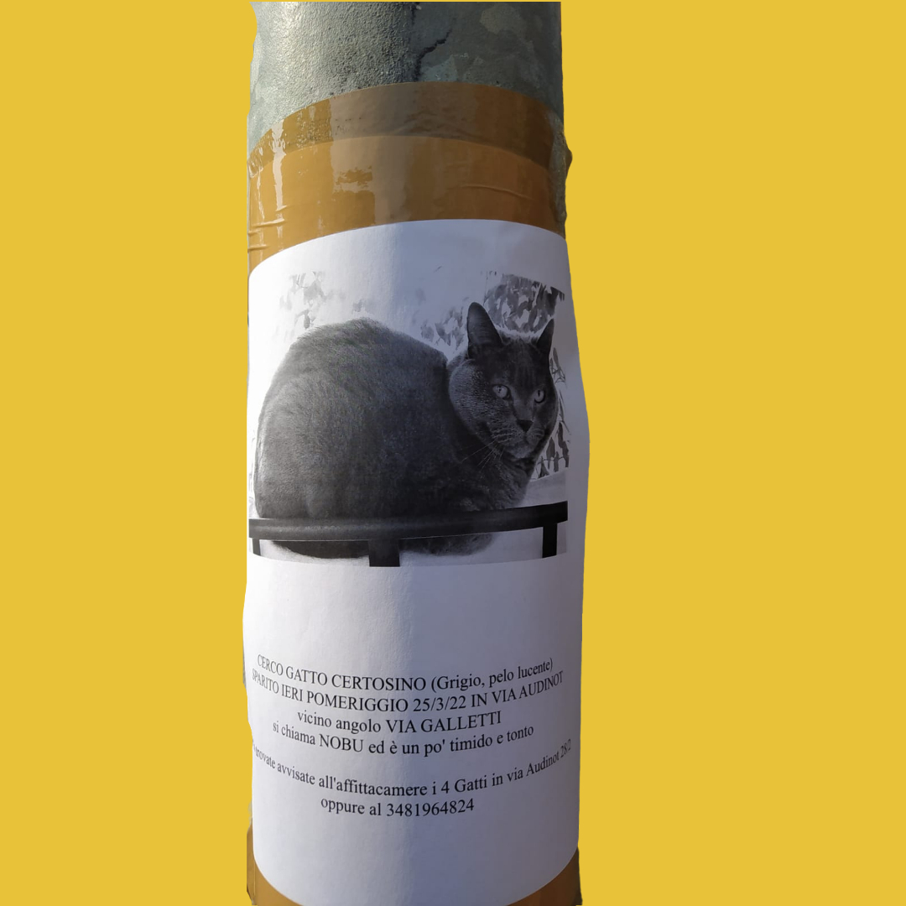

Between 2014 and 2020 Enrica started to collect, through her camera, all the most interesting papers of lost animals she met on her road, in different places around the world.
We put part of this collection in a specific section (click here to see it).
She was particularly impressed by the sentimental value that some of this notice papers could express about the affective tie between the lost animals and their owners.
WORDS
The expressive power of the words used to describe the physical and comportamental aspect of the animal was the most interesting part; indeed, it made us thinking about these particular aspect in a more wide view, including all the potential fields in which it coulded be interesting to study in deep this affective value.
AN EXEMPLIFICATION
"CERCO GATTO CERTOSINO (Grigio, pelo lucente") SPARITO IERI POMERIGGIO 25/3/22 IN VIA AUDINOT vicino angolo VIA GALLETTI si chiama NOBU ed è un po' timido e tonto"
In this particular case we highlighted the words "timido" (shy) and "tonto" (dumb) as a clear exemplification of anthropomorphization, more specifically, the attribution of human's traits, emotions, or intentions to non-human entities. Many theories have been published about this particular practice in human's history, since it is present (in different shapes) from the beginning of it. As we said, anthromopomorphization changes its shapes with the history and its tendencies; actually, in the era of technology and social media, animals have been humanized becoming protagounists of social posts and even owners of social media pages, with millions of followers.


This tendence encouraged us to search in deep about it, analysing data on social media and reading other staistical researches about the importance of the animal in the era of digitalization and virtual socialiation.
We decided to put these analysis in a specific section of the site, you can go on it by clicking here.
Since we already decided to base the project on the concept of sentymental bond between a human and its animal, the question at this point was how to translate it in an interesting idea for a cultural initiative. The challenge was to not result trivial and at the same time to find a theme that coulded be suitable for both an educational and affective final goal.

"animals in art"
At first we decided to investigate the presence of the animal in art: how it is considered and which are the most famous works that show animals as protagounists.
To help our analysis, we used two useful tools: a preliminary tab with pros and cons, and the design cards.
| attractiveness | documentation | reliability | emotionality |
|---|---|---|---|
| CONS | PROS | PROS | CONS |
At the end of our analysis we came to the conclusion that the topic was weak on many aspects: the triviality of the argument could make the initiative less attractive or addressed to a little cathegory; also, the project would have a more didactical finalization. On the other side, it would not be difficult to retrieve material about the topic, nor to expose it in a physical exhibit; but this idea wouldn't suggest innovationation or stimulation on the audience, and on a more emotional level it wouldn't leave nothing to the visitor.
"The animal: stories of how the domestic animal inspired its artist"
| attractiveness | documentation | reliability | emotionality |
|---|---|---|---|
| PROS | CONS | PROS | PROS |
This topic seemed more suitable to our necessities. A new interesting thematic, that invoves the emotional sphere of the visitor through the empathization with the author of the work. It is focused more on the emotional aspect than on the artistic, for this reason, the recruitment of the material could be more difficult.

Once we found the topic, we started to think about it in a museological view; trying to find the best way to translate it into a cultural journey.
Since the theme belongs to an emotional conceptuality, a good idea could be to express it trough a story that accompanies the user trough a journey, articulated in some phases at the end of which the user is free to express his personal story.
The steps that the user encounter during the journey were choosed on the base of the educational and sentymental goal that this project want to reach.
CREATING PROCESS: DESIGN CARDS
The (.....) designed by (.....) are a tool that we found very interesting and useful to fix our project in a more museological approach; their use helped us to frame all the ideas in a certain standard and to define all the practical aspects of the work that had to be done. In this phase of ideation we decided to continue to develop both the ideas: that about a virtual initiative located in a real museum, and that about a virtual museum located exclusively online.
PHYSICAL REFERENCE INSTITUTION
First, we decided to deepen the idea related to a physical reference institution; the concept was: develope an interactive app, mobile-interaction based, trough which the visitor could be able to interact with the exhibit using its own mobile-device (a smartphone or a tablet).
SEZIONE MUSEO FISICO
[spiegazione]

[spiegazione]

[spiegazione]
SEZIONE MUSEO VIRTUALE

[spiegazione]

[spiegazione]

[spiegazione]
PERSONAE
SCENARIO
QUI VA AGGIUNTO UN PICCOLO RIASSUNTO SU: TARGET, SPACE, GOALS, APPROACH
After a long creative process, we concluded that the best way to provide a both empathetic and didactic 'visit' was a virtual museum. The museum is divided in rooms, each of which is dedicated to a different artist and its bond with the animal as entity. The virtual room is structured in the following way: it is showed as a real museum room (walls, sofa, paints with panels), the paints we choosed to insert inside the space are the most representative of a connection with an animal; each paint has an interactive panel trough which (by clicking it) the user can visualize the work and go into detail. The information section showed by the panel is divided in some parts; a brief history of the artist, why we choosed him/her for our project and the analysis of most of the emblematic works that can be useful for the user to understand the importance of the animal in the creative processes of the artist.